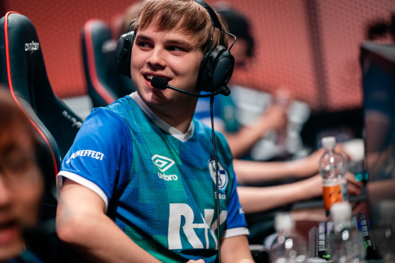
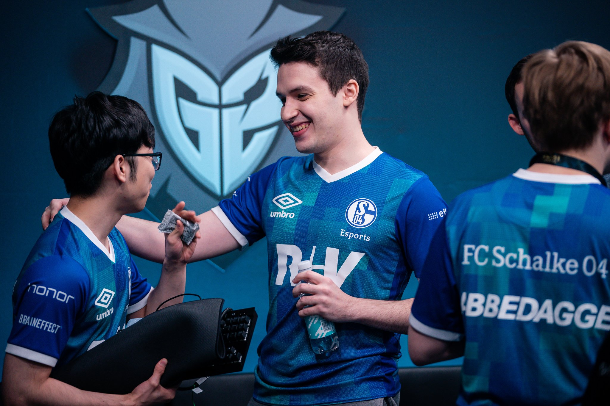

Galeria



El FC Schalke 04 Esports es va anunciar el 16 de maig de 2016, després d’haver comprat la llavor de la UE LCS estiu 2016 i la llista d’Elements. La seva llista incloïa Steve, Gilius, MrRalleZ i sprattel de la línia de la temporada de primavera d'Elements, amb Fox d'Unicorns of Love substituint Eika. Amb l’adquisició, el FC Schalke 04 es va convertir en la segona organització esportiva professional que va signar un equip de League of Legends, després que Beşiktaş adquirís Aces High el 2015.
El Schalke 04 va ser fundat el 1904, sota el nombre de Turnverein 1877, en companyia d'alguns estudiants que destacaven com a esportistes professionals. Sus primers colors van ser el vermell i el groc. Al equipo no le era permitido unirse a la Liga Oficial hasta 1912. Luego de varios cambios en el nombre oficial del club y diversos inconvenientes que ocurrieron sobre todo con el estallido de la Primera Guerra Mundial, el club va adoptar en 1924 el nombre que fins a l'actualitat conserva: FC Schalke 04, i amb l'adopció definitiva de la camiseta de color blau real o blau cobert, adoptant l’apode que es manté fins ara «Die Königsblauen» (en espanyol: Los Azules Reales). Per estos anys en l’equip jugaven, en la seva majoria, jugadors que es desempeñaven com a treballadors en les mineries de carbó de Gelsenkirchen, i de ahí el seu altre apode: «Die Knappen» (en espanyol: Los mineros).
L’any 1925 el club contrata per primera vegada a un tècnic professional i amb ell l’equip va començar a dominar a les lligues regionals en les que va participar. Així va començar a participar en els campionats nacionals i també a cimentar les bases de l'equip que dominaria Alemanya en les següents décadas. Durant aquest període l’equip ha utilitzat un sistema innovador de joc que es fa famós amb el nombre de «Schalker Kreisel», precursor dels actuals rondos. Per estos anys van començar a donar els seus primers passos les dues futures estrelles del club: Fritz Szepan i Ernst Kuzorra.
Org Ubicació Alemania
Head Coach Dylan Falco
Regió Europa
Creació 2016-05-16